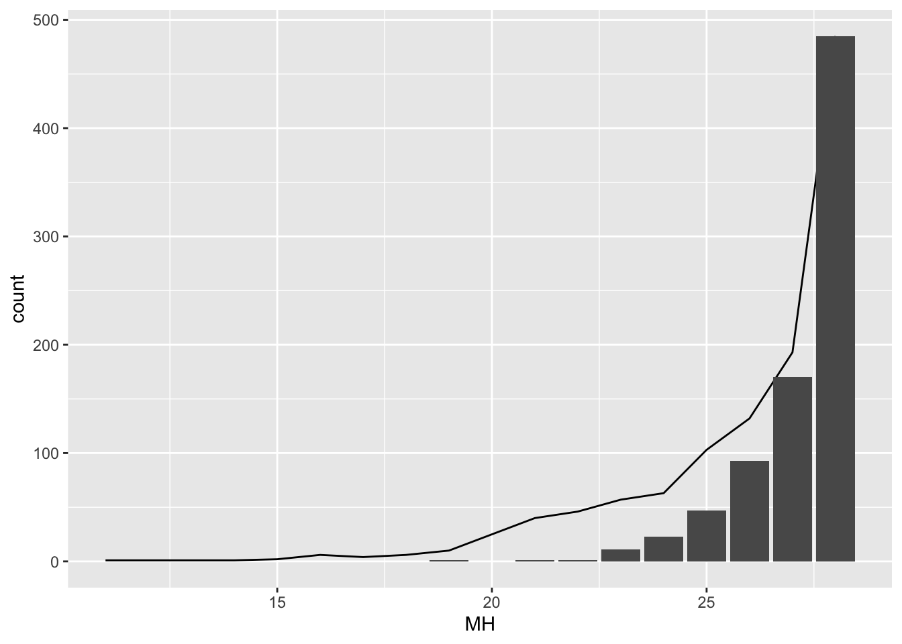
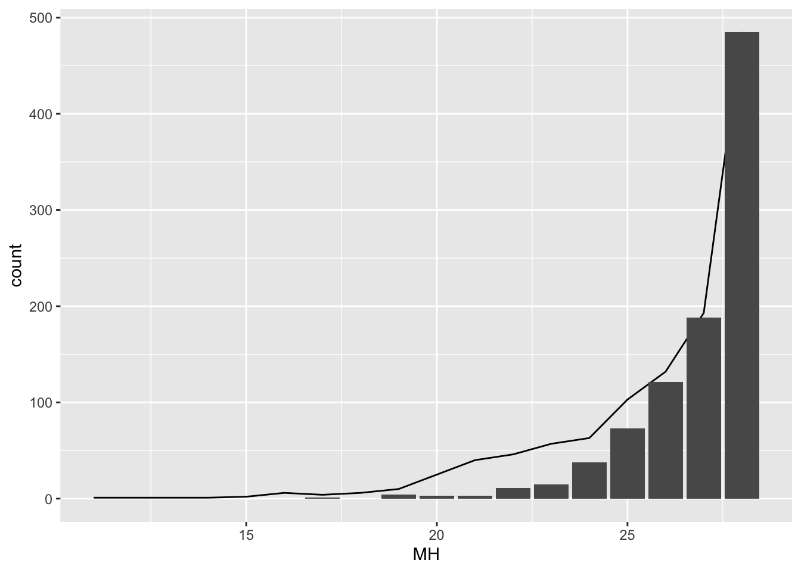
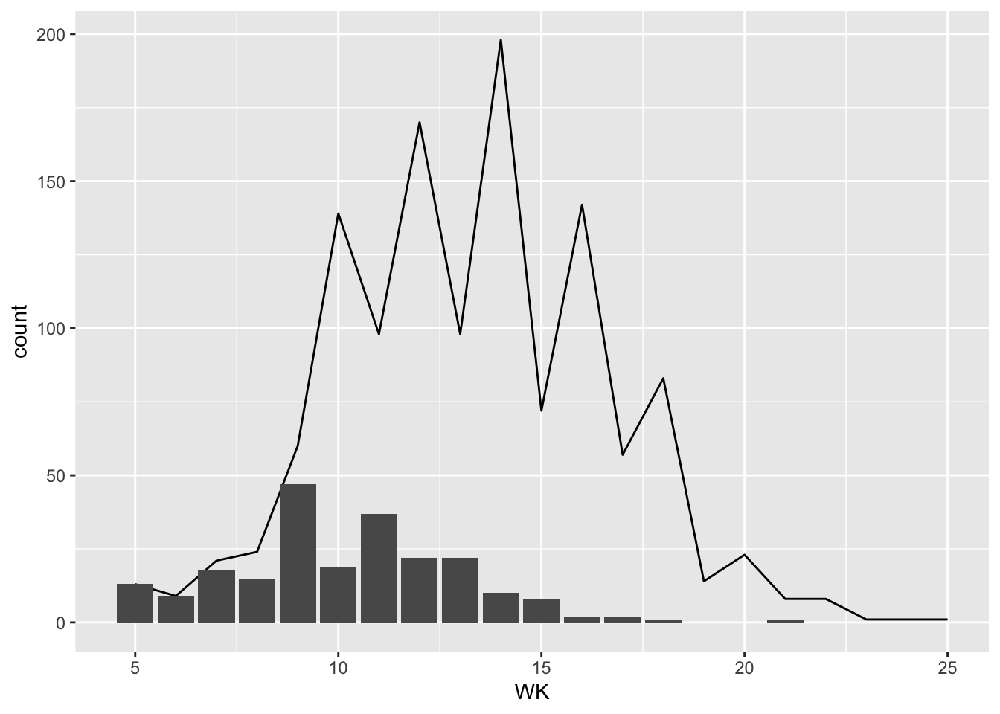
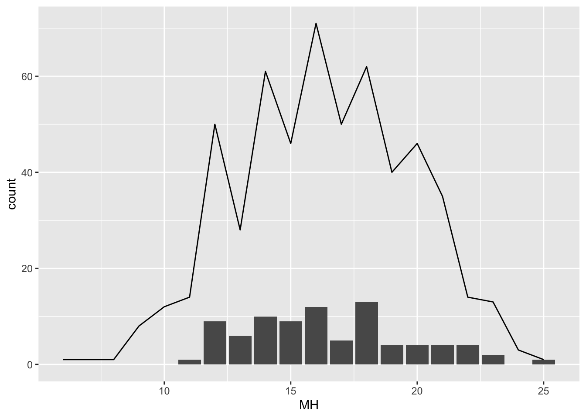

library(haven)
library(ggplot2)
library(data.table)
options(digits = 2)
Tab <- function(data, var1, code, var2) {
data <- as.data.frame(data)
i <- which(names(data) %in% var1)
j <- which(names(data) %in% var2)
n <- nrow(data[data[, i] %in% code, ])
tableA <- table(data[data[, i] %in% code, j])
Table1 <- cbind(Freq. = tableA,
Percent = tableA / n * 100,
Cum. = cumsum(tableA) / n * 100) |> data.frame()
Table1 <- rbind(Table1, Total = c(sum(Table1$Freq.), sum(Table1$Percent), ''))
Table1[,c(1:ncol(Table1))] <- Table1[,c(1:ncol(Table1))] |> unlist() |> as.numeric()
Table1 <- round(Table1, 3)
return(Table1)
}作業五六七_人口組
前言
人口學的普查或調查，通常著重於生死結離的蒐集與紀錄，而較少針對某一概念進行訪問，也因此缺乏能夠建構指數的資料，因此我們找出了與人口生活較相關的幾個指數，來進行分析。
由於這些題組缺乏能夠與之進行外在鑑別的問題，因此在部分資料上我們將題組進行切分，有用於建構指數的變項用於內在鑑別，其他則用於外在鑑別。
匯入套件及自訂函式
世界價值觀調查-安全
construct
本題在測量受訪者對住家附近的安全感受，H2-H8測量受訪者認為住家附近發生各種犯罪事件的頻率，H1測量受訪者對住家附近安全的整體感受，在安全的狀況下，H2-H8應該集中在不頻繁，H1應該集中在非常安全。

WVS <- read_dta("../../../HW/WVS2019_TW.dta") |> setDT()
WVS <- WVS[, paste0('Q', 131:138)]
WVS <- lapply(WVS[, paste0('Q', 131:138)],
function(x) {ifelse(!(x %in% c(1, 2, 3, 4)), NA, x)}) |> setDT()
WVS <- na.omit(WVS)
WVS <- WVS[,MH := Q132 + Q133 + Q134 + Q135 + Q136 + Q137 + Q138]
cor(WVS[, .(Q132, Q133, Q134, Q135, Q136, Q137, Q138)]) Q132 Q133 Q134 Q135 Q136 Q137 Q138
Q132 1.00 0.36 0.41 0.31 0.39 0.38 0.38
Q133 0.36 1.00 0.34 0.34 0.37 0.47 0.34
Q134 0.41 0.34 1.00 0.40 0.39 0.40 0.40
Q135 0.31 0.34 0.40 1.00 0.40 0.47 0.47
Q136 0.39 0.37 0.39 0.40 1.00 0.53 0.52
Q137 0.38 0.47 0.40 0.47 0.53 1.00 0.59
Q138 0.38 0.34 0.40 0.47 0.52 0.59 1.00變項之間皆有中度相關
data1 <- WVS[, .(Q131, Q132, Q133, Q134, Q135, Q136, Q137, Q138, MH)] |> data.frame()
tableA <- table(data1[, 'MH'])
tableB <- cumsum(tableA)
Table1 <- cbind(Freq. = tableA,
Percent = round(tableA / nrow(data1) * 100, 2),
Cum. = round(tableB / nrow(data1) * 100, 2)) |> data.frame()
Table1 <- rbind(Table1, Total = c(sum(Table1$Freq.), sum(Table1$Percent), ''))
Table1 Freq. Percent Cum.
11 1 0.09 0.09
14 1 0.09 0.17
15 2 0.17 0.34
16 6 0.51 0.85
17 4 0.34 1.19
18 6 0.51 1.7
19 10 0.85 2.56
20 25 2.13 4.68
21 40 3.41 8.09
22 46 3.92 12.01
23 57 4.86 16.87
24 63 5.37 22.23
25 103 8.77 31.01
26 132 11.24 42.25
27 193 16.44 58.69
28 485 41.31 100
Total 1174 100.01 ggplot()+
geom_bar(data = data1, aes(x = MH))指數成偏態分佈，仍可以繼續進行分析以排除影響指數建構的變項。
內部鑑別
Tab(data1, 'Q132', 4, 'MH') Freq. Percent Cum.
18 2 0.21 0.21
19 1 0.11 0.32
20 3 0.32 0.63
21 6 0.63 1.27
22 21 2.22 3.49
23 30 3.17 6.66
24 39 4.12 10.78
25 75 7.93 18.71
26 104 10.99 29.70
27 180 19.03 48.73
28 485 51.27 100.00
Total 946 100.00 NAggplot()+
geom_line(data = data1, aes(x = MH), stat = "count")+
geom_bar(data = data1[data1$Q132 == 4, ], aes(x = MH))Q132等於4時的分佈情形與指數一致，對指數建構有貢獻，具有內在鑑別力。
Tab(data1, 'Q133', 4, 'MH') Freq. Percent Cum.
20 1 0.17 0.17
22 1 0.17 0.33
23 3 0.50 0.83
24 4 0.67 1.50
25 19 3.17 4.67
26 24 4.01 8.68
27 62 10.35 19.03
28 485 80.97 100.00
Total 599 100.00 NAggplot()+
geom_line(data = data1, aes(x = MH), stat = "count")+
geom_bar(data = data1[data1$Q133 == 4, ], aes(x = MH))Q133等於4時的分佈情形與指數一致，對指數建構有貢獻，具有內在鑑別力。
Tab(data1, 'Q134', 4, 'MH') Freq. Percent Cum.
14 1 0.099 0.099
16 1 0.099 0.198
18 2 0.198 0.396
19 4 0.396 0.793
20 4 0.396 1.189
21 9 0.892 2.081
22 22 2.180 4.262
23 34 3.370 7.631
24 41 4.063 11.695
25 89 8.821 20.515
26 127 12.587 33.102
27 190 18.831 51.933
28 485 48.067 100.000
Total 1009 100.000 NAggplot()+
geom_line(data = data1, aes(x = MH), stat = "count")+
geom_bar(data = data1[data1$Q134 == 4, ], aes(x = MH))
Q134等於4時的分佈情形與指數一致，對指數建構有貢獻，具有內在鑑別力。
Tab(data1, 'Q135', 4, 'MH') Freq. Percent Cum.
16 1 0.11 0.11
18 1 0.11 0.21
19 3 0.32 0.54
20 4 0.43 0.97
21 3 0.32 1.29
22 13 1.40 2.69
23 25 2.69 5.38
24 42 4.52 9.90
25 64 6.89 16.79
26 111 11.95 28.74
27 177 19.05 47.79
28 485 52.21 100.00
Total 929 100.00 NAggplot()+
geom_line(data = data1, aes(x = MH), stat = "count")+
geom_bar(data = data1[data1$Q135 == 4, ], aes(x = MH))Q135等於4時的分佈情形與指數一致，對指數建構有貢獻，具有內在鑑別力。
Tab(data1, 'Q136', 4, 'MH') Freq. Percent Cum.
17 1 0.099 0.099
20 3 0.298 0.398
21 8 0.795 1.193
22 19 1.889 3.082
23 31 3.082 6.163
24 50 4.970 11.133
25 91 9.046 20.179
26 127 12.624 32.803
27 191 18.986 51.789
28 485 48.211 100.000
Total 1006 100.000 NAggplot()+
geom_line(data = data1, aes(x = MH), stat = "count")+
geom_bar(data = data1[data1$Q136 == 4, ], aes(x = MH))Q136等於4時的分佈情形與指數一致，對指數建構有貢獻，具有內在鑑別力。
Tab(data1, 'Q137', 4, 'MH') Freq. Percent Cum.
19 1 0.12 0.12
21 1 0.12 0.24
22 1 0.12 0.36
23 11 1.32 1.68
24 23 2.76 4.45
25 47 5.65 10.10
26 93 11.18 21.27
27 170 20.43 41.71
28 485 58.29 100.00
Total 832 100.00 NAggplot()+
geom_line(data = data1, aes(x = MH), stat = "count")+
geom_bar(data = data1[data1$Q137 == 4, ], aes(x = MH))
Q137等於4時的分佈情形與指數一致，對指數建構有貢獻，具有內在鑑別力。
Tab(data1, 'Q138', 4, 'MH') Freq. Percent Cum.
17 1 0.11 0.11
19 4 0.42 0.53
20 3 0.32 0.85
21 3 0.32 1.17
22 11 1.17 2.33
23 15 1.59 3.93
24 38 4.03 7.96
25 73 7.75 15.71
26 121 12.85 28.56
27 188 19.96 48.51
28 485 51.49 100.00
Total 942 100.00 NAggplot()+
geom_line(data = data1, aes(x = MH), stat = "count")+
geom_bar(data = data1[data1$Q138 == 4, ], aes(x = MH))
Q138等於4時的分佈情形與指數一致，對指數建構有貢獻，具有內在鑑別力。
外部鑑別
Tab(data1, 'Q131', 1, 'MH') Freq. Percent Cum.
16 1 0.16 0.16
17 1 0.16 0.32
18 1 0.16 0.48
19 2 0.32 0.80
20 5 0.80 1.60
21 9 1.45 3.05
22 10 1.60 4.66
23 13 2.09 6.74
24 24 3.85 10.59
25 44 7.06 17.66
26 55 8.83 26.48
27 117 18.78 45.27
28 341 54.73 100.00
Total 623 100.00 NAggplot()+
geom_line(data = data1, aes(x = MH), stat = "count")+
geom_bar(data = data1[data1$Q131 == 1, ], aes(x = MH))
Q131等於1時的分佈情形與指數一致，具有外在鑑別力。（本題編碼方向不同）
小結
在本指數中，構成指數的變項均具有內部鑑別力，且經外部鑑別後仍有效力，為一可用的指數。
臺灣社會變遷基本調查 7期1次 工作與生活
construct
我們認為這份問卷所要測量的construct，為填答者在現工作中，各方面的工作滿意度，其中包含：工作內容、工作環境與職涯發展等構面，以填答者對現工作中的各面向滿意度建構出，其對現工作的滿意度。
tscs152 <- read_dta("../../../HW/tscs152.dta", encoding = "big-5") |> setDT()
tscs152 <- (tscs152[!(e3a > 5 | e3b > 5 | e3c > 5 | e3d > 5 | e3e > 5 | e3f > 5 | e3g > 5 | e3h > 5), ]
[, ":="(WK = e3a + e3b + e3c+ e3d + e3e)])
cor(tscs152[, .(e3a, e3b, e3c, e3d, e3e, e3f, e3g, e3h)]) e3a e3b e3c e3d e3e e3f e3g e3h
e3a 1.00 0.365 0.355 0.22 0.050 0.13 0.14 0.125
e3b 0.37 1.000 0.394 0.27 0.118 0.16 0.15 0.084
e3c 0.35 0.394 1.000 0.20 0.013 0.14 0.10 0.091
e3d 0.22 0.272 0.198 1.00 0.235 0.30 0.30 0.303
e3e 0.05 0.118 0.013 0.23 1.000 0.23 0.19 0.142
e3f 0.13 0.164 0.142 0.30 0.229 1.00 0.52 0.447
e3g 0.14 0.154 0.105 0.30 0.194 0.52 1.00 0.369
e3h 0.13 0.084 0.091 0.30 0.142 0.45 0.37 1.000data2 <- tscs152[, .(e3a, e3b, e3c, e3d, e3e, e3f, e3g, e3h, WK)] |> data.frame()變項間主要呈現低度相關，部分為中度相關。
查看指數分佈情形。
# WK #
tableA <- table(data2[, 'WK'])
tableB <- cumsum(tableA)
Table1 <- cbind(Freq. = tableA,
Percent = round(tableA / nrow(data2) * 100, 2),
Cum. = round(tableB / nrow(data2) * 100, 2)) |> data.frame()
Table1 <- rbind(Table1, Total = c(sum(Table1$Freq.), sum(Table1$Percent), ''))
Table1 Freq. Percent Cum.
5 13 1.05 1.05
6 9 0.73 1.78
7 21 1.69 3.47
8 24 1.94 5.41
9 60 4.84 10.25
10 139 11.22 21.47
11 98 7.91 29.38
12 170 13.72 43.1
13 98 7.91 51.01
14 198 15.98 66.99
15 72 5.81 72.8
16 142 11.46 84.26
17 57 4.6 88.86
18 83 6.7 95.56
19 14 1.13 96.69
20 23 1.86 98.55
21 8 0.65 99.19
22 8 0.65 99.84
23 1 0.08 99.92
25 1 0.08 100
Total 1239 100.01 ggplot()+
geom_bar(data = data2, aes(x = WK))指數分佈集中在中央，因此須透過鑑別檢視是否有變項在影響指數的效力。
內部鑑別
# e3a #
Tab(data2, 'e3a', 1, 'WK') Freq. Percent Cum.
5 13 5.75 5.8
6 9 3.98 9.7
7 18 7.96 17.7
8 15 6.64 24.3
9 47 20.80 45.1
10 19 8.41 53.5
11 37 16.37 69.9
12 22 9.73 79.6
13 22 9.73 89.4
14 10 4.42 93.8
15 8 3.54 97.3
16 2 0.89 98.2
17 2 0.89 99.1
18 1 0.44 99.6
21 1 0.44 100.0
Total 226 100.00 NAggplot()+
geom_line(data = data2, aes(x = WK), stat = "count")+
geom_bar(data = data2[data2$e3a == 1, ], aes(x = WK))
可以看出e3a的填答1時，和其他問題的數值合，其分布不集中在數值較低者，意即當填答者回答e3a為1時，其他題目的回答多半不是1，答題者面對問題e3a和其他問題時的填答方向不一致，因此推論問題e3a在此與其它題目的的內部一致性不高，不具有內部鑑別力。
# e3b #
Tab(data2, 'e3b', 1, 'WK') Freq. Percent Cum.
5 13 23.6 24
6 4 7.3 31
7 10 18.2 49
8 6 10.9 60
9 9 16.4 76
10 2 3.6 80
11 5 9.1 89
12 1 1.8 91
13 5 9.1 100
Total 55 100.0 NAggplot()+
geom_line(data = data2, aes(x = WK), stat = "count")+
geom_bar(data = data2[data2$e3b == 1, ], aes(x = WK))可以看出e3b的填答1時，和其他問題的數值合，其分布是集中在數值較低者，意即當填答者回答e3b為1時，其他題目的回答最多是，而不是1者，回答也傾向低分項，答題者面對問題e3b和其他問題時的填答方向呈現一致，因此推論問題e3b在此與其它題目的的內部一致性高，具有內部鑑別力。
# e3c #
Tab(data2, 'e3c', 1, 'WK') Freq. Percent Cum.
5 13 22.0 22
6 6 10.2 32
7 14 23.7 56
8 2 3.4 59
9 6 10.2 69
10 4 6.8 76
11 5 8.5 85
12 7 11.9 97
13 1 1.7 98
14 1 1.7 100
Total 59 100.0 NAggplot()+
geom_line(data = data2, aes(x = WK), stat = "count")+
geom_bar(data = data2[data2$e3c == 1, ], aes(x = WK))
可以看出e3c的填答1時，和其他問題的數值合，其分布是集中在數值較低者，意即當填答者回答e3c為1時，其他題目的回答最多是，而不是1者，回答也傾向低分項，答題者面對問題e3c和其他問題時的填答方向呈現一致，因此推論問題e3c在此與其它題目的的內部一致性高，具有內部鑑別力。
# e3d #
Tab(data2, 'e3d', 1, 'WK') Freq. Percent Cum.
5 13 8.9 8.9
6 8 5.5 14.4
7 13 8.9 23.3
8 15 10.3 33.6
9 14 9.6 43.2
10 21 14.4 57.5
11 13 8.9 66.4
12 13 8.9 75.3
13 14 9.6 84.9
14 12 8.2 93.2
15 4 2.7 95.9
16 3 2.1 97.9
17 3 2.1 100.0
Total 146 100.0 NAggplot()+
geom_line(data = data2, aes(x = WK), stat = "count")+
geom_bar(data = data2[data2$e3d == 1, ], aes(x = WK))可以看出e3d的填答1時，和其他問題的數值合，其分布不集中在數值較低者，意即當填答者回答e3d為1時，其他題目的回答多半不是1，答題者面對問題e3d和其他問題時的填答方向不一致，因此推論問題e3d在此與其它題目的的內部一致性不高，不具有內部鑑別力。
# e3e #
Tab(data2, 'e3e', 1, 'WK') Freq. Percent Cum.
5 13 6.08 6.1
6 9 4.21 10.3
7 10 4.67 15.0
8 16 7.48 22.4
9 17 7.94 30.4
10 22 10.28 40.7
11 17 7.94 48.6
12 28 13.08 61.7
13 22 10.28 72.0
14 16 7.48 79.4
15 12 5.61 85.0
16 13 6.08 91.1
17 11 5.14 96.3
18 4 1.87 98.1
20 2 0.94 99.1
21 2 0.94 100.0
Total 214 100.00 NAggplot()+
geom_line(data = data2, aes(x = WK), stat = "count")+
geom_bar(data = data2[data2$e3e == 1, ], aes(x = WK))可以看出e3e的填答1時，和其他問題的數值合，其分布不集中在數值較低者，意即當填答者回答e3e為1時，其他題目的回答多半不是1，答題者面對問題e3e和其他問題時的填答方向不一致，因此推論問題e3e在此與其它題目的的內部一致性不高，不具有內部鑑別力。
外部鑑別
# e3f #
Tab(data2, 'e3f', 1, 'WK') Freq. Percent Cum.
5 12 5.74 5.7
6 6 2.87 8.6
7 12 5.74 14.4
8 11 5.26 19.6
9 16 7.66 27.3
10 27 12.92 40.2
11 24 11.48 51.7
12 26 12.44 64.1
13 13 6.22 70.3
14 28 13.40 83.7
15 7 3.35 87.1
16 10 4.79 91.9
17 8 3.83 95.7
18 3 1.44 97.1
19 1 0.48 97.6
20 2 0.96 98.6
21 2 0.96 99.5
22 1 0.48 100.0
Total 209 100.00 NAggplot()+
geom_line(data = data2, aes(x = WK), stat = "count")+
geom_bar(data = data2[data2$e3f == 1, ], aes(x = WK))可以看出e3f的填答1時，和其他問題的數值合，其分布不集中在數值較低者，意即當填答者回答e3f為1時，其他題目的回答多半不是1，答題者面對問題e3f和其他問題時的填答方向不一致，因此推論問題e3f在此與指數中的題目一致性不高，不具有外部鑑別力。
# e3g #
Tab(data2, 'e3g', 1, 'WK') Freq. Percent Cum.
5 11 5.09 5.1
6 6 2.78 7.9
7 13 6.02 13.9
8 14 6.48 20.4
9 16 7.41 27.8
10 30 13.89 41.7
11 23 10.65 52.3
12 23 10.65 63.0
13 12 5.56 68.5
14 24 11.11 79.6
15 7 3.24 82.9
16 14 6.48 89.4
17 13 6.02 95.4
18 6 2.78 98.1
20 1 0.46 98.6
21 2 0.93 99.5
22 1 0.46 100.0
Total 216 100.00 NAggplot()+
geom_line(data = data2, aes(x = WK), stat = "count")+
geom_bar(data = data2[data2$e3g == 1, ], aes(x = WK))可以看出e3g的填答1時，和其他問題的數值合，其分布不集中在數值較低者，意即當填答者回答e3g為1時，其他題目的回答多半不是1，答題者面對問題e3g和其他問題時的填答方向不一致，因此推論問題e3g在此與指數中的題目一致性不高，不具有外部鑑別力。
# e3h #
Tab(data2, 'e3h', 1, 'WK') Freq. Percent Cum.
5 12 3.31 3.3
6 9 2.49 5.8
7 13 3.59 9.4
8 16 4.42 13.8
9 26 7.18 21.0
10 41 11.33 32.3
11 31 8.56 40.9
12 45 12.43 53.3
13 34 9.39 62.7
14 49 13.54 76.2
15 18 4.97 81.2
16 28 7.74 89.0
17 19 5.25 94.2
18 10 2.76 97.0
19 2 0.55 97.5
20 4 1.10 98.6
21 1 0.28 98.9
22 3 0.83 99.7
25 1 0.28 100.0
Total 362 100.00 NAggplot()+
geom_line(data = data2, aes(x = WK), stat = "count")+
geom_bar(data = data2[data2$e3h == 1, ], aes(x = WK))可以看出e3h的填答1時，和其他問題的數值合，其分布不集中在數值較低者，意即當填答者回答e3h為1時，其他題目的回答多半不是1，答題者面對問題e3h和其他問題時的填答方向不一致，因此推論問題e3h在此與指數中的題目一致性不高，不具有外部鑑別力。
小結
本指數中的變項無法反應測量的對象，需要重新尋找其他變項。
臺灣社會變遷基本調查 7期2次 家庭
construct
我們想要使用本筆資料測量性別偏見，D1組在測量受訪者對性別角色的看法，D2則是在測量誰在家中具有主導的地位，在有性別偏見的狀況下，D1應該會對於男性和女性的性別角色有一致看的法，D2則應顯示家中主導權應集中在單一方手中。
我們想要測量性別偏見，由於用於外部鑑別的D2題組選項6-96無法顯示對性別的偏見，因此我們保留作答1-5的受試者，並將女性的1-5反向編碼，此時回答1代表的是總是丈夫在做家事，5代表總是妻子在做家事。
tscs161 <- read_dta('../../../HW/tscs161.dta', encoding = 'big5')
indexName <- c('a1', paste0('d1', letters[1:6]), paste0('d2', letters[1:4]))
data3 <- tscs161[, indexName] |> setDT()本題組因為缺乏可以進行外部鑑別的問題，因此將題組內部進行分割，有用於建構指數的變項進行內部鑑別，其他變項用於外部鑑別。
data3 <- data3[data3[, Reduce(`&`, lapply(.SD, `<=`, 5)), .SDcols = indexName], ..indexName]
data4 <- data3[a1 == 2]
data4$d2a <- car::recode(data4$d2a, '1=5;2=4;4=2;5=1')
data4$d2b <- car::recode(data4$d2b, '1=5;2=4;4=2;5=1')
data4$d2c <- car::recode(data4$d2c, '1=5;2=4;4=2;5=1')
data4$d2d <- car::recode(data4$d2d, '1=5;2=4;4=2;5=1')
data5 <- rbind(data3[a1 == 1], data4)
cor(data5[, .(d1a, d1b, d1c, d1d, d1e, d1f)]) d1a d1b d1c d1d d1e d1f
d1a 1.000 0.188 -0.050 0.24 0.081 0.257
d1b 0.188 1.000 -0.032 0.11 0.287 0.071
d1c -0.050 -0.032 1.000 0.09 0.070 -0.027
d1d 0.244 0.107 0.090 1.00 0.127 0.172
d1e 0.081 0.287 0.070 0.13 1.000 0.145
d1f 0.257 0.071 -0.027 0.17 0.145 1.000變項間多呈現低度相關、無相關甚至負相關，負相關經檢視後非因編碼方向不同所造成。尤其d1c與其他變項呈現大量負相關，因此將其排除於指數之外。
data5 <- data5[, MH := d1a + d1b + d1d + d1e + d1f] |> data.frame()Tab(data5, 'MH', c(5:25), 'MH') Freq. Percent Cum.
6 1 0.18 0.18
7 1 0.18 0.36
8 1 0.18 0.54
9 8 1.44 1.98
10 12 2.15 4.13
11 14 2.51 6.64
12 50 8.98 15.62
13 28 5.03 20.65
14 61 10.95 31.60
15 46 8.26 39.86
16 71 12.75 52.60
17 50 8.98 61.58
18 62 11.13 72.71
19 40 7.18 79.89
20 46 8.26 88.15
21 35 6.28 94.43
22 14 2.51 96.95
23 13 2.33 99.28
24 3 0.54 99.82
25 1 0.18 100.00
Total 557 100.00 NAggplot()+
geom_bar(data = data5, aes(x = MH))指數分佈集中在中央，需要進一步檢視是否有特定變項影響指數的效力。
內部鑑別
Tab(data5, 'd1a', 5, 'MH') Freq. Percent Cum.
9 1 1.1 1.1
11 1 1.1 2.3
13 1 1.1 3.4
14 3 3.4 6.8
15 7 8.0 14.8
16 7 8.0 22.7
17 8 9.1 31.8
18 6 6.8 38.6
19 10 11.4 50.0
20 15 17.0 67.0
21 10 11.4 78.4
22 9 10.2 88.6
23 6 6.8 95.5
24 3 3.4 98.9
25 1 1.1 100.0
Total 88 100.0 NAggplot()+
geom_line(data = data5, aes(x = MH), stat = "count")+
geom_bar(data = data5[data5$d1a == 5, ], aes(x = MH))
Tab(data5, 'd1b', 5, 'MH') Freq. Percent Cum.
15 3 9.7 9.7
16 1 3.2 12.9
17 1 3.2 16.1
18 2 6.5 22.6
19 1 3.2 25.8
20 5 16.1 41.9
21 4 12.9 54.8
22 4 12.9 67.7
23 6 19.4 87.1
24 3 9.7 96.8
25 1 3.2 100.0
Total 31 100.0 NAggplot()+
geom_line(data = data5, aes(x = MH), stat = "count")+
geom_bar(data = data5[data5$d1b == 5, ], aes(x = MH))分佈較集中在高分項，與總分分佈不一致，鑑別力低落。
Tab(data5, 'd1c', 5, 'MH') Freq. Percent Cum.
9 2 33 33
16 1 17 50
17 1 17 67
21 2 33 100
Total 6 100 NAggplot()+
geom_line(data = data5, aes(x = MH), stat = "count")+
geom_bar(data = data5[data5$d1c == 5, ], aes(x = MH))資料過少，無法判斷
Tab(data5, 'd1d', 5, 'MH') Freq. Percent Cum.
12 1 1.7 1.7
13 1 1.7 3.4
14 4 6.8 10.2
15 2 3.4 13.6
16 4 6.8 20.3
17 6 10.2 30.5
18 5 8.5 39.0
19 1 1.7 40.7
20 10 16.9 57.6
21 10 16.9 74.6
22 4 6.8 81.4
23 7 11.9 93.2
24 3 5.1 98.3
25 1 1.7 100.0
Total 59 100.0 NAggplot()+
geom_line(data = data5, aes(x = MH), stat = "count")+
geom_bar(data = data5[data5$d1d == 5, ], aes(x = MH))資料分佈偏右，但沒有明顯集中區，無法判斷。
Tab(data5, 'd1e', 5, 'MH') Freq. Percent Cum.
14 1 3.8 3.8
17 1 3.8 7.7
19 3 11.5 19.2
20 5 19.2 38.5
21 5 19.2 57.7
22 2 7.7 65.4
23 8 30.8 96.2
25 1 3.8 100.0
Total 26 100.0 NAggplot()+
geom_line(data = data5, aes(x = MH), stat = "count")+
geom_bar(data = data5[data5$d1e == 5, ], aes(x = MH))分佈情形偏右，與總分分佈不一致。
Tab(data5, 'd1f', 5, 'MH') Freq. Percent Cum.
9 2 0.92 0.92
10 1 0.46 1.38
11 1 0.46 1.83
12 7 3.21 5.05
13 6 2.75 7.80
14 11 5.05 12.84
15 21 9.63 22.48
16 16 7.34 29.82
17 26 11.93 41.74
18 18 8.26 50.00
19 28 12.84 62.84
20 20 9.17 72.02
21 33 15.14 87.16
22 12 5.50 92.66
23 12 5.50 98.17
24 3 1.38 99.54
25 1 0.46 100.00
Total 218 100.00 NAggplot()+
geom_line(data = data5, aes(x = MH), stat = "count")+
geom_bar(data = data5[data5$d1f == 5, ], aes(x = MH))呈現左偏態分佈，與總分分佈不一致。
外部鑑別
Tab(data5, 'd2a', 5, 'MH') Freq. Percent Cum.
11 1 1.2 1.2
12 9 10.7 11.9
13 6 7.1 19.0
14 10 11.9 31.0
15 9 10.7 41.7
16 12 14.3 56.0
17 5 6.0 61.9
18 13 15.5 77.4
19 4 4.8 82.1
20 4 4.8 86.9
21 4 4.8 91.7
22 4 4.8 96.4
23 2 2.4 98.8
25 1 1.2 100.0
Total 84 100.0 NAggplot()+
geom_line(data = data5, aes(x = MH), stat = "count")+
geom_bar(data = data5[data5$d2a == 5, ], aes(x = MH))
大略呈現左偏態，與總分分佈情形不一致。
Tab(data5, 'd2b', 5, 'MH') Freq. Percent Cum.
11 2 2.2 2.2
12 8 8.8 11.0
13 6 6.6 17.6
14 8 8.8 26.4
15 12 13.2 39.6
16 9 9.9 49.5
17 9 9.9 59.3
18 9 9.9 69.2
19 6 6.6 75.8
20 9 9.9 85.7
21 6 6.6 92.3
22 3 3.3 95.6
23 3 3.3 98.9
25 1 1.1 100.0
Total 91 100.0 NAggplot()+
geom_line(data = data5, aes(x = MH), stat = "count")+
geom_bar(data = data5[data5$d2b == 5, ], aes(x = MH))分佈集中中央，與總分分佈情形較一致。
Tab(data5, 'd2c', 5, 'MH') Freq. Percent Cum.
7 1 1.1 1.1
9 1 1.1 2.2
10 2 2.2 4.3
11 1 1.1 5.4
12 11 11.8 17.2
13 7 7.5 24.7
14 9 9.7 34.4
15 9 9.7 44.1
16 10 10.8 54.8
17 11 11.8 66.7
18 6 6.5 73.1
19 5 5.4 78.5
20 6 6.5 84.9
21 6 6.5 91.4
22 4 4.3 95.7
23 4 4.3 100.0
Total 93 100.0 NAggplot()+
geom_line(data = data5, aes(x = MH), stat = "count")+
geom_bar(data = data5[data5$d2c == 5, ], aes(x = MH))分佈集中於中央，與指數分佈情形較接近。
Tab(data5, 'd2d', 5, 'MH') Freq. Percent Cum.
9 1 1.9 1.9
10 1 1.9 3.7
11 2 3.7 7.4
12 2 3.7 11.1
13 6 11.1 22.2
14 4 7.4 29.6
15 4 7.4 37.0
16 4 7.4 44.4
17 6 11.1 55.6
18 7 13.0 68.5
19 3 5.6 74.1
20 2 3.7 77.8
21 5 9.3 87.0
22 5 9.3 96.3
23 2 3.7 100.0
Total 54 100.0 NAggplot()+
geom_line(data = data5, aes(x = MH), stat = "count")+
geom_bar(data = data5[data5$d2d == 5, ], aes(x = MH))分佈較接近均勻分布，沒有明顯集中的地方。
小結
本指數的分佈情形集中於中央，經檢視各題項後，部分題項分佈情形與總分一致，而部分呈現左偏態。外部鑑別指標均與指數分佈相似，從概念上應有鑑別力。
但此一指數分佈集中於中央，實際上無法區分究竟受訪者有無性別偏見，其中成偏態分佈的變項也不足以獨立組成一可以用於測量性別偏見的指數，因此此指數不應採用。